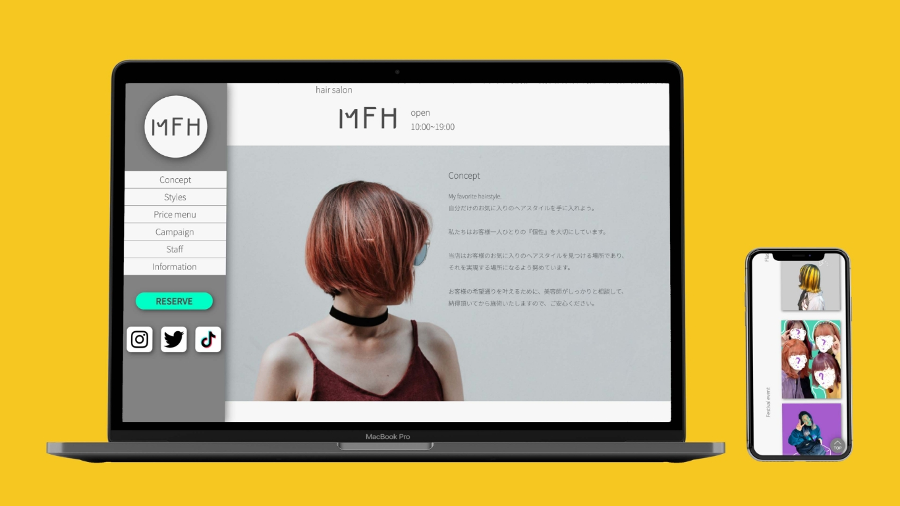

ヘアサロンサイト
-
制作期間
20日
-
使用ツール
Photoshop、Illustrator、XD、VScode
-
コーディング
HTML、CSS、jQuery
-
制作フロー
訓練校の授業にて、オリジナルwebサイトの課題
-
概要
架空ヘアサロンのサイト
topページ
stylesページ
お客様情報入力ページ -
目的
お店のコンセプトや特徴を一目でわかるようにして、
ターゲットに合ったお客さんに来てもらい、コンバージョンさせる。 -
ターゲット層
派手髪対応のサロンをお探しの方。
派手髪が好き、髪に個性を出したい、イメチェンしたい学生や大人の方。
成人式や学祭、ライブコンサートなどのイベントで派手髪にしたい方。 -
制作ポイント
配色は派手髪の画像が際立つようにグレーをメインに使い、コンバージョンボタンは目立つよう、派手な 色にしました。 お店のコンセプトや特徴を一目でわかるよう、スタイリングの写真の見せ方にこだわりました。 pcレイアウトでは、ナビゲーションメニューを画面の左側に固定させて、ページ巡回しやすくしました。 また、コンバージョンボタンをメニューの中に入れて、リピーターのお客様でも使いやすいように考えま した。
stylesページ
topページのstylesのlinkをクリック。
pcレイアウトのstylesページでは、これまでのスタイリングの写真を
豊富に載せられるよう、グリットレイアウトで実装しました。
お客様情報入力ページ
topページのreserveボタンをクリック。
予約ページの中のお客様情報入力ページです。

 PageTop
PageTop